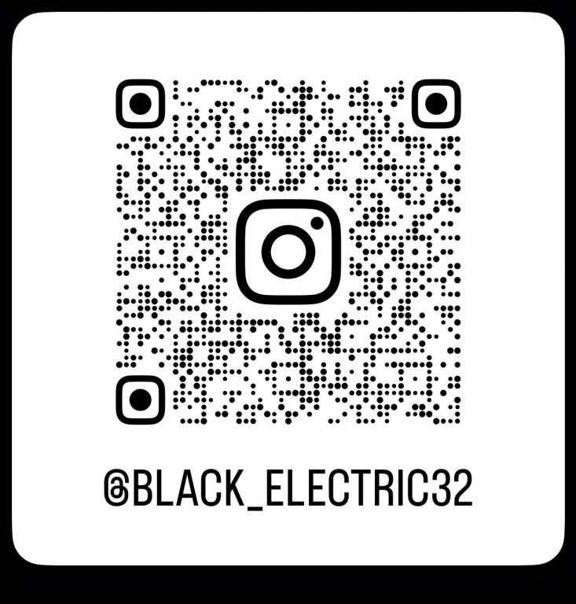

mm M M
CRISIS MANAGEMENT STUDENT / CYBERSECURITY & NATIONAL SECURITY TRACK
日本大学危機管理学部3年。サイバー空間の脅威が国家の安全保障にどう影響するかを、制度・政策の両面から研究しています。仲良くしてね。
話しかけたいと思ったらインスタでDMしてね @black_electric32
自己紹介
はじめまして、私の名前は、M Mです。2005年8月2日生まれ、現在--歳。日本大学危機管理学部の3年生です。大学では、主に国家安全保障やサイバーセキュリティなどについて学んでいます。
特に関心があるのは、サイバー空間という「見えない戦場」が、国家安全保障や防衛政策にどう組み込まれていくかという点です。重要インフラへの攻撃が現実の危機管理体制をどこまで揺るがすのか、日本・米国・中国・ロシアの制度を比較しながら卒業論文で検証しています。
休みの日は電車に乗って知らない街へ行ったり、PCを自作したりしながら、頭を切り替えています。仲良くしてくれると嬉しいです。
関心分野
サイバーセキュリティ
重要インフラに対するサイバー攻撃の脅威分析と、被害を最小化するための危機管理体制を研究しています。
国家安全保障
サイバー空間における脅威が、従来の安全保障の枠組みにどう影響するかを国際比較の視点で分析しています。
防衛政策
各国の制度設計やインテリジェンスと危機管理の連携体制を比較し、日本への提言を考えています。
趣味
旅行 — 鉄道で日本各地へ
電車に乗って日本各地の風景を見に行くのが好きです。車窓から見える景色や、地域ごとの路線・駅の雰囲気の違いを楽しんでいます。
ゲーム
いろんなゲームをやってます〜。よく遊んでいるゲームは下記に記載してるので、もしこれやっているよとか、あれば気軽に声をかけてほしいです。タップすると各ゲームの公式サイトに移動します。
機械いじり
iPhoneの修理やPCの自作など、ハードウェアを分解・構築するのが好きです。仕組みを理解しながら手を動かす時間が一番落ち着きます。
連絡先
話しかけたいと思ったら、QRをスキャンしてDMを送ってね。
フォローしてくれるととても嬉しいです